CORE 2 Console · One console, every specialty
Consolidated Operating Room Equipment — 한 대의 콘솔로 여러 Powered instrument를 구동
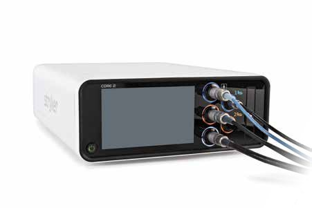
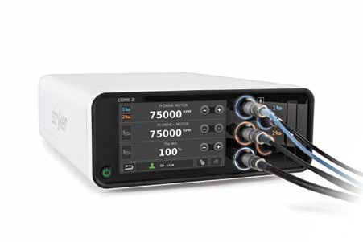
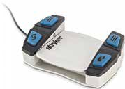
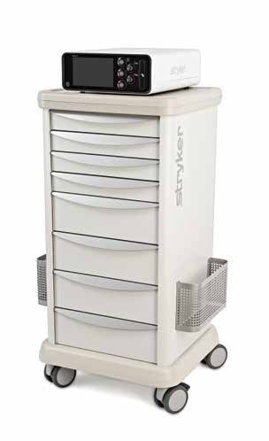
Ortho · ENT · Neuro · Spine
정형외과, 치과, 이비인후과, 신경외과, 척추, 내시경 영역에서 소·대형 Bone drill, Saw, Driver, Shaver(소·대관절/ENT), Bone Mill, Irrigation을 구동.
100+ User Profiles
술자별 설정 저장 후 USB로 다른 CORE 2 Console에 전송. Acceleration · Braking · Irrigation flow 조절.
Integrated Irrigation
전면 일체형 Irrigation Cassette — One-step 장착/제거, Auto prime, 유량 조절. 컬러 조명 링(Illumination ring)으로 Handpiece-Footswitch 매칭 표시.
- Handpiece Port 3개 — 중량급(non-heavy-duty) Handpiece 2개 동시 구동
- Footswitch Port 2개 — 한 Handpiece에 2개 페달 할당 가능
- Foot pedal: Irrigation on/off · Forward/Reverse · Port 변경 · RPM 변경 등 버튼 기능 지정
- 전 세계 30,000대+ CORE Console 사용 (Stryker 자료)
Part No. 5400-052-000 CORE 2 Console (US 카탈로그 표기 5400-052-000US) · 5400-050-001 CORE Console Irrigation Cassette (10 pkg)
Signature Portfolio · High-Speed Drill Platform
πdrive · πdrive+ (Electric) × Maestro Air (Pneumatic) — 65 Cutting Accessories, 33 Attachments
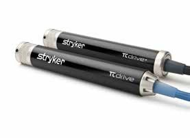
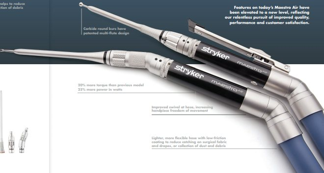
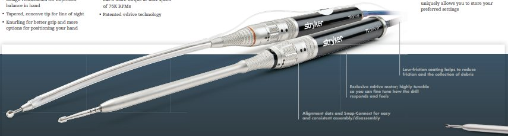
| Motor | Type | Key points | Part No. |
|---|---|---|---|
| πdrive | Electric | 최대 75K RPM · 낮은 발열로 긴 구동 시간 · Patented πdrive 모터 설계 | 5407-100-000 |
| πdrive+ | Electric | πdrive 대비 +60% power · 최대 75K RPM에서 +242% torque · Handswitch 옵션 | 5407-300-000 |
| Maestro Air | Pneumatic | 최대 150 psi · 이전 모델 대비 +20% torque / +25% power · 최대 75K RPM | 5407-200-000 |
Part No.는 Stryker Neurosurgical Product Catalog 2021 기준. 이전 모델 대비 수치는 Stryker 자료이며, 국내 공급 구성은 담당자에게 확인하세요.
I.D. Touch Software · 나만의 Drill Feel
RPM만이 아니라 "손맛"을 조절 — Torque, Sensitivity, Brake, Acceleration
- Torque 0–100% 설정
- Drill response — 압력 인가 시 반응을 Low ~ High sensitivity로 조절
- Tactile feel · Drill precision / performance
- User preset에 저장 → 두 번의 터치로 호출
| Customization | Signature Portfolio |
|---|---|
| 사용자 Profile 저장 | ● (Unlimited profile) |
| I.D. Touch Software | ● |
| Adjustable irrigation flow | ● |
| Customizable foot pedal buttons | ● |
| Adjustable brake / acceleration | ● |
| Telescoping cutting accessories | ● (Reach · Shaft exposure 최대 5단계) |
| Foot pedal options | 전동 4종 · 공압 4종 |
Attachments & Cutting Accessories
Snap-Connect 컬러 코딩 — 호환 부속이 한눈에 보입니다
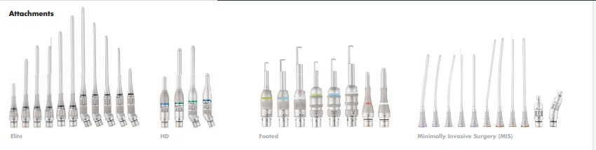
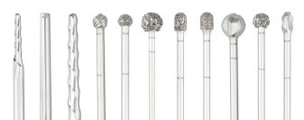
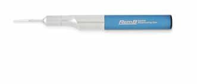
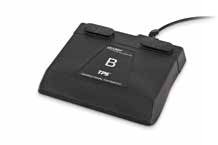
| Attachment family | 용도 (Typical) |
|---|---|
| Elite | Telescoping Cutting Accessories와 호환 — 한 부속으로 Reach 조절 |
| HD | Heavy-duty 계열 Attachment |
| Footed | Footed attachment — Router와 Part number를 맞춰 즉시 페어링, Tactile bump로 방향 확인 |
| MIS | Minimally Invasive Surgery — 좁은 접근로(ex. Spine MIS)용 긴 Shaft, Irrigation Sleeves(MIS 13cm/16cm, Elite 7cm/12-20cm)와 조합 |
- Cutting Accessories 65종+: Routers · Rounds · Match heads · Diamond surfaces — Craniotomy, Bone drilling, Reaming, Screw/Pin 준비
- Elite LX: 약 40종 신규 Elite Accessories — Carbide bur로 Chatter 30%+ 감소 (Stryker internal data)
- Multi-notch(최대 10mm) Telescoping Accessories로 재고 최대 5:1 통합
- Carbide Round Bur: Patented multi-flute design · 2Flute accessory chatter 25% 감소 (Stryker internal data)
- Alignment dot · Tactile bump · Matching part number — 조립 오류 방지
Where it fits · 적용 영역
Neuro · Spine · ENT를 중심으로 Orthopaedic Micro-power까지 하나의 CORE 2 플랫폼
Craniotomy · Bone drilling
Attachment + Router · Round · Diamond bur
Decompression
MIS Attachment · Elite LX Carbide bur · Irrigation Sleeve
S2 Drive · S2 Mini
Otology drill 시스템과 CORE 2 연동
공식 자료: Signature Portfolio High-speed Drill Brochure (PDF) · CORE 2 Console Brochure (PDF) · CORE 2 Console